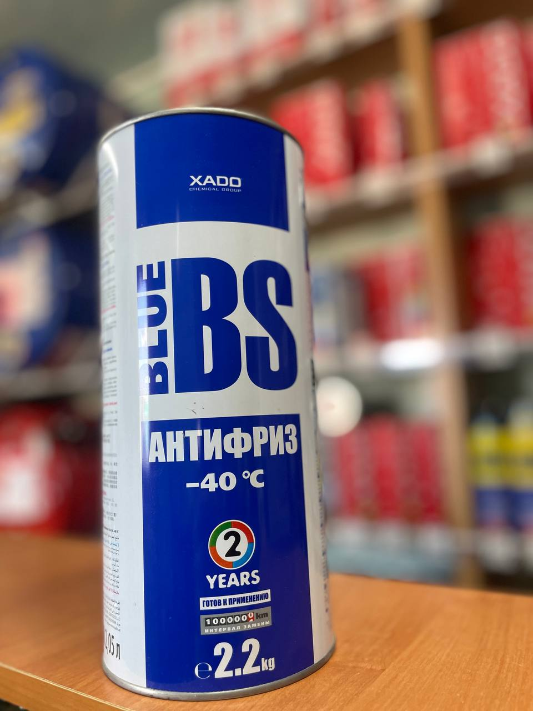

Об’єм: 2 л
Антифриз готовий до використання для охолоджувальної системи двигуна XADO Blue BS -40⁰С.
Не замерзає при температурах до -40 °C, має синій відтінок та містить ревіталізант. Забезпечує стабільну роботу системи охолодження до 2 років або 100 000 км пробігу.
Підтримує оптимальний тепловий режим двигуна в будь-яких умовах експлуатації.
Запобігає утворенню піни та бульбашок, гарантує ефективну роботу помпи та відведення тепла.
Захищає систему від відкладень та шламу, зберігаючи її чистоту.
Надійний антикорозійний захист всіх металевих деталей.
Безпечний для алюмінієвих сплавів, гуми та синтетичних матеріалів.
Не шкодить пластику та лакофарбовому покриттю автомобіля.
Може змішуватися з іншими синіми охолоджуючими рідинами на основі етиленгліколю.
Відповідає стандартам і вимогам різних автовиробників:
Рідина XADO Blue BS -40⁰С підходить для експлуатації за температур до -40 °C. При вищих температурах її можна розбавляти водою.
Пропорції приготування готової охолоджуючої суміші наведені в таблиці:
| Антифриз Blue BS -40⁰С | Вода | Температура навколишнього середовища, °С |
|---|---|---|
| 1 частина | 1 частина | -15 |
| 2 частини | 1 частина | -20 |
| 3 частини | 1 частина | -30 |
Якщо ви хочете дізнатись про наявність товару, отримати консультацію або поставити будь-які питання щодо продукції XADO — ми завжди готові допомогти.
Телефон для зв’язку: +38 (050) 585-07-26
Ми допоможемо обрати саме те, що потрібно вашому автомобілю.
Звертайтеся, ми цінуємо кожного клієнта!